The Annotated Transformer
https://nlp.seas.harvard.edu/annotated-transformer/
[TOC]
Background
The goal of reducing sequential computation also forms the foundation of the Extended Neural GPU, ByteNet and ConvS2S, all of which use convolutional neural networks as basic building block, computing hidden representations in parallel for all input and output positions. In these models, the number of operations required to relate signals from two arbitrary input or output positions grows in the distance between positions, linearly for ConvS2S and logarithmically for ByteNet. This makes it more difficult to learn dependencies between distant positions.
In the Transformer this is reduced to a constant number of operations, albeit at the cost of reduced effective resolution due to averaging attention-weighted positions, an effect we counteract with Multi-Head Attention.
Self-attention, sometimes called intra-attention is an attention mechanism relating different positions of a single sequence in order to compute a representation of the sequence. Self-attention has been used successfully in a variety of tasks including reading comprehension, abstractive summarization, textual entailment and learning task-independent sentence representations. End-to-end memory networks are based on a recurrent attention mechanism instead of sequencealigned recurrence and have been shown to perform well on simple-language question answering and language modeling tasks.
To the best of our knowledge, however, the Transformer is the first transduction model relying entirely on self-attention to compute representations of its input and output without using sequence aligned RNNs or convolution.
Part 1: Model Architecture
Model Architecture
Most competitive neural sequence transduction models have an encoder-decoder structure (cite). Here, the encoder maps an input sequence of symbol representations to a sequence of continuous representations . Given , the decoder then generates an output sequence of symbols one element at a time. At each step the model is auto-regressive (cite), consuming the previously generated symbols as additional input when generating the next.
class EncoderDecoder(nn.Module):
"""
A standard Encoder-Decoder architecture. Base for this and many
other models.
"""
def __init__(self, encoder, decoder, src_embed, tgt_embed, generator):
super(EncoderDecoder, self).__init__()
self.encoder = encoder
self.decoder = decoder
self.src_embed = src_embed
self.tgt_embed = tgt_embed
self.generator = generator
def forward(self, src, tgt, src_mask, tgt_mask):
"Take in and process masked src and target sequences."
return self.decode(self.encode(src, src_mask), src_mask, tgt, tgt_mask)
def encode(self, src, src_mask):
return self.encoder(self.src_embed(src), src_mask)
def decode(self, memory, src_mask, tgt, tgt_mask):
return self.decoder(self.tgt_embed(tgt), memory, src_mask, tgt_mask)class Generator(nn.Module):
"Define standard linear + softmax generation step."
def __init__(self, d_model, vocab):
super(Generator, self).__init__()
self.proj = nn.Linear(d_model, vocab)
def forward(self, x):
return log_softmax(self.proj(x), dim=-1)The Transformer follows this overall architecture using stacked self-attention and point-wise, fully connected layers for both the encoder and decoder, shown in the left and right halves of Figure 1, respectively.
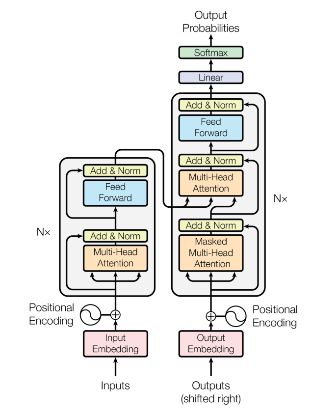
Encoder and Decoder Stacks
Encoder
The encoder is composed of a stack of identical layers.
def clones(module, N):
"Produce N identical layers."
return nn.ModuleList([copy.deepcopy(module) for _ in range(N)])class Encoder(nn.Module):
"Core encoder is a stack of N layers"
def __init__(self, layer, N):
super(Encoder, self).__init__()
self.layers = clones(layer, N)
self.norm = LayerNorm(layer.size)
def forward(self, x, mask):
"Pass the input (and mask) through each layer in turn."
for layer in self.layers:
x = layer(x, mask)
return self.norm(x)We employ a residual connection(cite) around each of the two sub-layers, followed by layer normalization(cite).
class LayerNorm(nn.Module):
"Construct a layernorm module (See citation for details)."
def __init__(self, features, eps=1e-6):
super(LayerNorm, self).__init__()
self.a_2 = nn.Parameter(torch.ones(features))
self.b_2 = nn.Parameter(torch.zeros(features))
self.eps = eps
def forward(self, x):
mean = x.mean(-1, keepdim=True)
std = x.std(-1, keepdim=True)
return self.a_2 * (x - mean) / (std + self.eps) + self.b_2That is, the output of each sub-layer is , where is the functioni mplemented by the sub-layer itself. We apply dropout (cite) to the output of each sub-layer, before it is added to the sub-layer input and normalized.
To facilitate these residual connections, all sub-layers in the model, as well as the embedding layers, produce outputs of dimension .
class SublayerConnection(nn.Module):
"""
A residual connection followed by a layer norm.
Note for code simplicity the norm is first as opposed to last.
"""
def __init__(self, size, dropout):
super(SublayerConnection, self).__init__()
self.norm = LayerNorm(size)
self.dropout = nn.Dropout(dropout)
def forward(self, x, sublayer):
"Apply residual connection to any sublayer with the same size."
return x + self.dropout(sublayer(self.norm(x)))Each layer has two sub-layers. The first is a multi-head self-attention mechanism, and the second is a simple, position-wise fully connected feed-forward network.
class EncoderLayer(nn.Module):
"Encoder is made up of self-attn and feed forward (defined below)"
def __init__(self, size, self_attn, feed_forward, dropout):
super(EncoderLayer, self).__init__()
self.self_attn = self_attn
self.feed_forward = feed_forward
self.sublayer = clones(SublayerConnection(size, dropout), 2)
self.size = size
def forward(self, x, mask):
"Follow Figure 1 (left) for connections."
x = self.sublayer[0](x, lambda x: self.self_attn(x, x, x, mask))
return self.sublayer[1](x, self.feed_forward)Decoder
The decoder is also composed of a stack of identical layers.
class Decoder(nn.Module):
"Generic N layer decoder with masking."
def __init__(self, layer, N):
super(Decoder, self).__init__()
self.layers = clones(layer, N)
self.norm = LayerNorm(layer.size)
def forward(self, x, memory, src_mask, tgt_mask):
for layer in self.layers:
x = layer(x, memory, src_mask, tgt_mask)
return self.norm(x)In addition to the two sub-layers in each encoder layer, the decoder inserts a third sub-layer, which performs multi-head attention over the output of the encoder stack. Similar to the encoder, we employ residual connections around each of the sub-layers, followed by layer normalization.
class DecoderLayer(nn.Module):
"Decoder is made of self-attn, src-attn, and feed forward (defined below)"
def __init__(self, size, self_attn, src_attn, feed_forward, dropout):
super(DecoderLayer, self).__init__()
self.size = size
self.self_attn = self_attn
self.src_attn = src_attn
self.feed_forward = feed_forward
self.sublayer = clones(SublayerConnection(size, dropout), 3)
def forward(self, x, memory, src_mask, tgt_mask):
"Follow Figure 1 (right) for connections."
m = memory
x = self.sublayer[0](x, lambda x: self.self_attn(x, x, x, tgt_mask))
x = self.sublayer[1](x, lambda x: self.src_attn(x, m, m, src_mask))
return self.sublayer[2](x, self.feed_forward)We also modify the self-attention sub-layer in the decoder stack to prevent positions from attending to subsequent positions. This masking, combined with fact that the output embeddings are offset by one position, ensures that the predictions for position can depend only on the known outputs at positions less than .
def subsequent_mask(size):
"Mask out subsequent positions."
attn_shape = (1, size, size)
subsequent_mask = torch.triu(torch.ones(attn_shape), diagonal=1).type(
torch.uint8
)
return subsequent_mask == 0Below the attention mask shows the position each tgt word (row) is allowed to look at (column). Words are blocked for attending to future words during training.
def example_mask():
LS_data = pd.concat(
[
pd.DataFrame(
{
"Subsequent Mask": subsequent_mask(20)[0][x, y].flatten(),
"Window": y,
"Masking": x,
}
)
for y in range(20)
for x in range(20)
]
)
return (
alt.Chart(LS_data)
.mark_rect()
.properties(height=250, width=250)
.encode(
alt.X("Window:O"),
alt.Y("Masking:O"),
alt.Color("Subsequent Mask:Q", scale=alt.Scale(scheme="viridis")),
)
.interactive()
)
show_example(example_mask)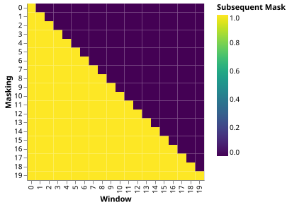
Attention
An attention function can be described as mapping a query and a set of key-value pairs to an output, where the query, keys, values, and output are all vectors. The output is computed as a weighted sum of the values, where the weight assigned to each value is computed by a compatibility function of the query with the corresponding key.
We call our particular attention “Scaled Dot-Product Attention”. The input consists of queries and keys of dimension , and values of dimension . We compute the dot products of the query with all keys, divide each by , and apply a softmaxfun ction to obtain the weights on the values.
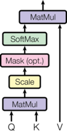
In practice, we compute the attention function on a set of queries simultaneously, packed together into a matrix . The keys and values are also packed together into matrices and . We compute the matrix of outputs as:
def attention(query, key, value, mask=None, dropout=None):
"Compute 'Scaled Dot Product Attention'"
d_k = query.size(-1)
scores = torch.matmul(query, key.transpose(-2, -1)) / math.sqrt(d_k)
if mask is not None:
scores = scores.masked_fill(mask == 0, -1e9)
p_attn = scores.softmax(dim=-1)
if dropout is not None:
p_attn = dropout(p_attn)
return torch.matmul(p_attn, value), p_attnThe two most commonly used attention functions are additive attention (cite), and dot-product (multiplicative) attention. Dot-product attention is identical to our algorithm, except for the scaling factor of . Additive attention computes the compatibility function using a feed-forward network with a single hidden layer. While the two are similar in theoretical complexity, dot-product attention is much faster and more space-efficient in practice, since it can be implemented using highly optimized matrixm ultiplication code.
While for small values of the two mechanisms perform similarly, additive attention outperforms dot product attention without scaling for larger values of (cite). We suspect that for large values of , the dot products grow large in magnitude, pushing the softmax function into regions where it has extremely small gradients (To illustrate why the dot products get large, assume that the components of and are independent random variables with mean and variance . Then their dot product, , has mean and variance .). To counteract this effect, we scale the dot products by .
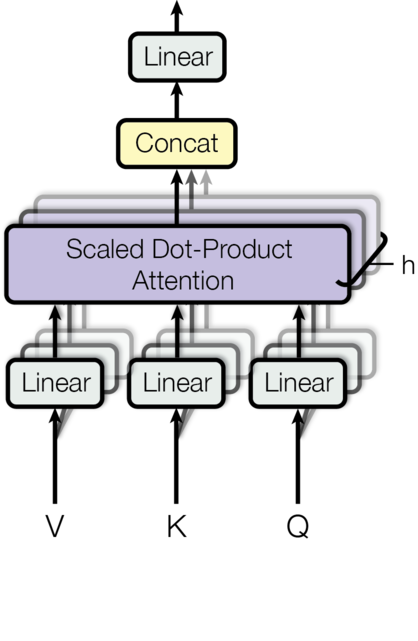
Multi-head attention allows the model to jointly attend to information from different representation subspaces at different positions. With a single attention head, averaging inhibits this.
Where the projections are parameter matrices , , and .
In this work we employ parallel attention layers, or heads. For each of these we use . Due to the reduced dimension of each head, the total computational cost is similar to that of single-head attention with full dimensionality.
class MultiHeadedAttention(nn.Module):
def __init__(self, h, d_model, dropout=0.1):
"Take in model size and number of heads."
super(MultiHeadedAttention, self).__init__()
assert d_model % h == 0
# We assume d_v always equals d_k
self.d_k = d_model // h
self.h = h
self.linears = clones(nn.Linear(d_model, d_model), 4)
self.attn = None
self.dropout = nn.Dropout(p=dropout)
def forward(self, query, key, value, mask=None):
"Implements Figure 2"
if mask is not None:
# Same mask applied to all h heads.
mask = mask.unsqueeze(1)
nbatches = query.size(0)
# 1) Do all the linear projections in batch from d_model => h x d_k
query, key, value = [
lin(x).view(nbatches, -1, self.h, self.d_k).transpose(1, 2)
for lin, x in zip(self.linears, (query, key, value))
]
# 2) Apply attention on all the projected vectors in batch.
x, self.attn = attention(
query, key, value, mask=mask, dropout=self.dropout
)
# 3) "Concat" using a view and apply a final linear.
x = (
x.transpose(1, 2)
.contiguous()
.view(nbatches, -1, self.h * self.d_k)
)
del query
del key
del value
return self.linears[-1](x)Applications of Attention in our Model
The Transformer uses multi-head attention in three different ways:
-
In “encoder-decoder attention” layers, the queries come from the previous decoder layer, and the memory keys and values come from the output of the encoder. This allows every position in the decoder to attend over all positions in the input sequence. This mimics the typical encoder-decoder attention mechanisms in sequence-to-sequence models such as (cite).
-
The encoder contains self-attention layers. In a self-attention layer all of the keys, values and queries come from the same place, in this case, the output of the previous layer in the encoder. Each position in the encoder can attend to all positions in the previous layer of the encoder.
-
Similarly, self-attention layers in the decoder allow each position in the decoder to attend to all positions in the decoder up to and including that position. We need to prevent leftward information flow in the decoder to preserve the auto-regressive property. We implement this inside of scaled dot-product attention by masking out (setting to ) all values in the input of thes oftmax which correspond to illegal connections.
Position-wise Feed-Forward Networks
In addition to attention sub-layers, each of the layers in our encoder and decoder contains a fully connected feed-forward network, which is applied to each position separately and identically. This consists of two linear transformations with a ReLU activation in between.
While the linear transformations are the same across different positions, they use different parameters from layer to layer. Another way of describing this is as two convolutions with kernel size 1. The dimensionality of input and output is , and the inner-layer has dimensionality .
class PositionwiseFeedForward(nn.Module):
"Implements FFN equation."
def __init__(self, d_model, d_ff, dropout=0.1):
super(PositionwiseFeedForward, self).__init__()
self.w_1 = nn.Linear(d_model, d_ff)
self.w_2 = nn.Linear(d_ff, d_model)
self.dropout = nn.Dropout(dropout)
def forward(self, x):
return self.w_2(self.dropout(self.w_1(x).relu()))Embeddings and Softmax
Similarly to other sequence transduction models, we use learned embeddings to convert the input tokens and output tokens to vectors of dimension . We also use the usual learned linear transformation and softmax function to convert the decoder output to predicted next-token probabilities. In our model, we share the same weight matrix between the two embedding layers and the pre-softmax linear transformation, similar to (cite). In the embedding layers, we multiply those weights by .
class Embeddings(nn.Module):
def __init__(self, d_model, vocab):
super(Embeddings, self).__init__()
self.lut = nn.Embedding(vocab, d_model)
self.d_model = d_model
def forward(self, x):
return self.lut(x) * math.sqrt(self.d_model)Positional Encoding
Since our model contains no recurrence and no convolution, in order for the model to make use of the order of the sequence, we must inject some information about the relative or absolute position of the tokens in the sequence. To this end, we add “positional encodings” to the input embeddings at the bottoms of the encoder and decoder stacks. The positional encodings have the same dimension as the embeddings, so that the two can be summed. There are many choices of positional encodings, learned and fixed (cite).
In this work, we use sine and cosine functions of different frequencies:
where is the position and is the dimension. That is, each dimension of the positional encoding corresponds to a sinusoid. The wavelengths form a geometric progression from to . We chose this function because we hypothesized it would allow the model to easily learn to attend by relative positions, since for any fixed offset , can be represented as a linear function of .
In addition, we apply dropout to the sums of the embeddings and the positional encodings in both the encoder and decoder stacks. For the base model, we use a rate of .
class PositionalEncoding(nn.Module):
"Implement the PE function."
def __init__(self, d_model, dropout, max_len=5000):
super(PositionalEncoding, self).__init__()
self.dropout = nn.Dropout(p=dropout)
# Compute the positional encodings once in log space.
pe = torch.zeros(max_len, d_model)
position = torch.arange(0, max_len).unsqueeze(1)
div_term = torch.exp(
torch.arange(0, d_model, 2) * -(math.log(10000.0) / d_model)
)
pe[:, 0::2] = torch.sin(position * div_term)
pe[:, 1::2] = torch.cos(position * div_term)
pe = pe.unsqueeze(0)
self.register_buffer("pe", pe)
def forward(self, x):
x = x + self.pe[:, : x.size(1)].requires_grad_(False)
return self.dropout(x)Below the positional encoding will add in a sine wave based on position. The frequency and offset of the wave is different for each dimension.
def example_positional():
pe = PositionalEncoding(20, 0)
y = pe.forward(torch.zeros(1, 100, 20))
data = pd.concat(
[
pd.DataFrame(
{
"embedding": y[0, :, dim],
"dimension": dim,
"position": list(range(100)),
}
)
for dim in [4, 5, 6, 7]
]
)
return (
alt.Chart(data)
.mark_line()
.properties(width=800)
.encode(x="position", y="embedding", color="dimension:N")
.interactive()
)
show_example(example_positional)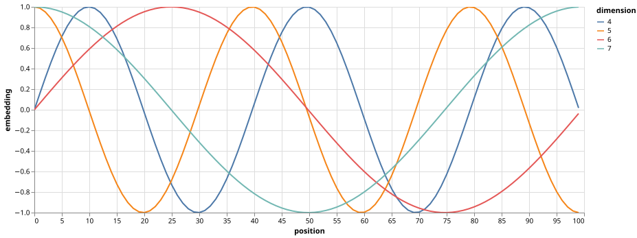
We also experimented with using learned positional embeddings (cite) instead, and found that the two versions produced nearly identical results. We chose the sinusoidal version because it may allow the model to extrapolate to sequence lengths longer than the ones encountered during training.
Full Model
Here we define a function from hyperparameters to a full model.
def make_model(
src_vocab, tgt_vocab, N=6, d_model=512, d_ff=2048, h=8, dropout=0.1
):
"Helper: Construct a model from hyperparameters."
c = copy.deepcopy
attn = MultiHeadedAttention(h, d_model)
ff = PositionwiseFeedForward(d_model, d_ff, dropout)
position = PositionalEncoding(d_model, dropout)
model = EncoderDecoder(
Encoder(EncoderLayer(d_model, c(attn), c(ff), dropout), N),
Decoder(DecoderLayer(d_model, c(attn), c(attn), c(ff), dropout), N),
nn.Sequential(Embeddings(d_model, src_vocab), c(position)),
nn.Sequential(Embeddings(d_model, tgt_vocab), c(position)),
Generator(d_model, tgt_vocab),
)
# This was important from their code.
# Initialize parameters with Glorot / fan_avg.
for p in model.parameters():
if p.dim() > 1:
nn.init.xavier_uniform_(p)
return modelInference
Here we make a forward step to generate a prediction of the model. We try to use our transformer to memorize the input. As you will see the output is randomly generated due to the fact that the model is not trained yet. In the next tutorial we will build the training function and try to train our model to memorize the numbers from 1 to 10.
def inference_test():
test_model = make_model(11, 11, 2)
test_model.eval()
src = torch.LongTensor([[1, 2, 3, 4, 5, 6, 7, 8, 9, 10]])
src_mask = torch.ones(1, 1, 10)
memory = test_model.encode(src, src_mask)
ys = torch.zeros(1, 1).type_as(src)
for i in range(9):
out = test_model.decode(
memory, src_mask, ys, subsequent_mask(ys.size(1)).type_as(src.data)
)
prob = test_model.generator(out[:, -1])
_, next_word = torch.max(prob, dim=1)
next_word = next_word.data[0]
ys = torch.cat(
[ys, torch.empty(1, 1).type_as(src.data).fill_(next_word)], dim=1
)
print("Example Untrained Model Prediction:", ys)
def run_tests():
for _ in range(10):
inference_test()
show_example(run_tests)Example Untrained Model Prediction: tensor([[ 0, 10, 0, 10, 0, 0, 0, 0, 0, 10]])
Example Untrained Model Prediction: tensor([[ 0, 8, 1, 10, 0, 8, 1, 10, 0, 8]])
Example Untrained Model Prediction: tensor([[ 0, 9, 0, 10, 4, 5, 3, 2, 4, 3]])
Example Untrained Model Prediction: tensor([[0, 5, 5, 5, 5, 5, 5, 5, 5, 5]])
Example Untrained Model Prediction: tensor([[0, 2, 8, 3, 8, 5, 0, 4, 0, 4]])
Example Untrained Model Prediction: tensor([[ 0, 10, 3, 10, 2, 9, 0, 3, 10, 3]])
Example Untrained Model Prediction: tensor([[0, 3, 3, 3, 3, 3, 3, 3, 3, 3]])
Example Untrained Model Prediction: tensor([[0, 0, 0, 0, 0, 0, 0, 0, 0, 0]])
Example Untrained Model Prediction: tensor([[0, 3, 2, 2, 2, 4, 0, 3, 1, 3]])
Example Untrained Model Prediction: tensor([[0, 6, 6, 6, 6, 6, 6, 6, 6, 6]])Part 2: Model Training
Training
This section describes the training regime for our models.
We stop for a quick interlude to introduce some of the tools needed to train a standard encoder decoder model. First we define a batch object that holds the src and target sentences for training, as well as constructing the masks.
Batches and Masking
class Batch:
"""Object for holding a batch of data with mask during training."""
def __init__(self, src, tgt=None, pad=2): # 2 = <blank>
self.src = src
self.src_mask = (src != pad).unsqueeze(-2)
if tgt is not None:
self.tgt = tgt[:, :-1]
self.tgt_y = tgt[:, 1:]
self.tgt_mask = self.make_std_mask(self.tgt, pad)
self.ntokens = (self.tgt_y != pad).data.sum()
@staticmethod
def make_std_mask(tgt, pad):
"Create a mask to hide padding and future words."
tgt_mask = (tgt != pad).unsqueeze(-2)
tgt_mask = tgt_mask & subsequent_mask(tgt.size(-1)).type_as(
tgt_mask.data
)
return tgt_maskNext we create a generic training and scoring function to keep track of loss. We pass in a generic loss compute function that also handles parameter updates.
Training Loop
class TrainState:
"""Track number of steps, examples, and tokens processed"""
step: int = 0 # Steps in the current epoch
accum_step: int = 0 # Number of gradient accumulation steps
samples: int = 0 # total # of examples used
tokens: int = 0 # total # of tokens processeddef run_epoch(
data_iter,
model,
loss_compute,
optimizer,
scheduler,
mode="train",
accum_iter=1,
train_state=TrainState(),
):
"""Train a single epoch"""
start = time.time()
total_tokens = 0
total_loss = 0
tokens = 0
n_accum = 0
for i, batch in enumerate(data_iter):
out = model.forward(
batch.src, batch.tgt, batch.src_mask, batch.tgt_mask
)
loss, loss_node = loss_compute(out, batch.tgt_y, batch.ntokens)
# loss_node = loss_node / accum_iter
if mode == "train" or mode == "train+log":
loss_node.backward()
train_state.step += 1
train_state.samples += batch.src.shape[0]
train_state.tokens += batch.ntokens
if i % accum_iter == 0:
optimizer.step()
optimizer.zero_grad(set_to_none=True)
n_accum += 1
train_state.accum_step += 1
scheduler.step()
total_loss += loss
total_tokens += batch.ntokens
tokens += batch.ntokens
if i % 40 == 1 and (mode == "train" or mode == "train+log"):
lr = optimizer.param_groups[0]["lr"]
elapsed = time.time() - start
print(
(
"Epoch Step: %6d | Accumulation Step: %3d | Loss: %6.2f "
+ "| Tokens / Sec: %7.1f | Learning Rate: %6.1e"
)
% (i, n_accum, loss / batch.ntokens, tokens / elapsed, lr)
)
start = time.time()
tokens = 0
del loss
del loss_node
return total_loss / total_tokens, train_stateTraining Data and Batching
We trained on the standard WMT 2014 English-German dataset consisting of about 4.5 million sentence pairs. Sentences were encoded using byte-pair encoding, which has a shared source-target vocabulary of about 37000 tokens. For English-French, we used the significantly larger WMT 2014 English-French dataset consisting of 36M sentences and split tokens into a 32000 word-piece vocabulary.
Sentence pairs were batched together by approximate sequence length. Each training batch contained a set of sentence pairs containing approximately 25000 source tokens and 25000 target tokens.
Hardware and Schedule
We trained our models on one machine with 8 NVIDIA P100 GPUs. For our base models using the hyperparameters described throughout the paper, each training step took about 0.4 seconds. We trained the base models for a total of 100,000 steps or 12 hours. For our big models, step time was 1.0 seconds. The big models were trained for 300,000 steps (3.5 days).
Optimizer
We used the Adam optimizer (cite) with , and . We varied the learning rate over the course of training, according to the formula:
This corresponds to increasing the learning rate linearly for the first training steps, and decreasing it thereafter proportionally to the inverse square root of the step number. We used .
Note: This part is very important. Need to train with this setup of the model.
Example of the curves of this model for different model sizes and for optimization hyperparameters.
def rate(step, model_size, factor, warmup):
"""
we have to default the step to 1 for LambdaLR function
to avoid zero raising to negative power.
"""
if step == 0:
step = 1
return factor * (
model_size ** (-0.5) * min(step ** (-0.5), step * warmup ** (-1.5))
)def example_learning_schedule():
opts = [
[512, 1, 4000], # example 1
[512, 1, 8000], # example 2
[256, 1, 4000], # example 3
]
dummy_model = torch.nn.Linear(1, 1)
learning_rates = []
# we have 3 examples in opts list.
for idx, example in enumerate(opts):
# run 20000 epoch for each example
optimizer = torch.optim.Adam(
dummy_model.parameters(), lr=1, betas=(0.9, 0.98), eps=1e-9
)
lr_scheduler = LambdaLR(
optimizer=optimizer, lr_lambda=lambda step: rate(step, *example)
)
tmp = []
# take 20K dummy training steps, save the learning rate at each step
for step in range(20000):
tmp.append(optimizer.param_groups[0]["lr"])
optimizer.step()
lr_scheduler.step()
learning_rates.append(tmp)
learning_rates = torch.tensor(learning_rates)
# Enable altair to handle more than 5000 rows
alt.data_transformers.disable_max_rows()
opts_data = pd.concat(
[
pd.DataFrame(
{
"Learning Rate": learning_rates[warmup_idx, :],
"model_size:warmup": ["512:4000", "512:8000", "256:4000"][
warmup_idx
],
"step": range(20000),
}
)
for warmup_idx in [0, 1, 2]
]
)
return (
alt.Chart(opts_data)
.mark_line()
.properties(width=600)
.encode(x="step", y="Learning Rate", color="model_size:warmup:N")
.interactive()
)
example_learning_schedule()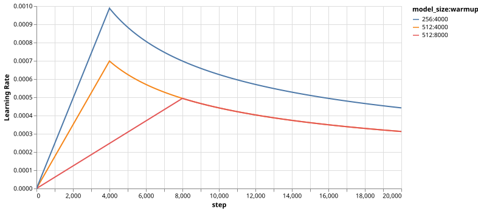
Regularization
Label Smoothing
During training, we employed label smoothing of value (cite). This hurts perplexity, as the model learns to be more unsure, but improves accuracy and BLEU score.
We implement label smoothing using the KL div loss. Instead of using a one-hot target distribution, we create a distribution that has
confidenceof the correct word and the rest of thesmoothingmass distributed throughout the vocabulary.
class LabelSmoothing(nn.Module):
"Implement label smoothing."
def __init__(self, size, padding_idx, smoothing=0.0):
super(LabelSmoothing, self).__init__()
self.criterion = nn.KLDivLoss(reduction="sum")
self.padding_idx = padding_idx
self.confidence = 1.0 - smoothing
self.smoothing = smoothing
self.size = size
self.true_dist = None
def forward(self, x, target):
assert x.size(1) == self.size
true_dist = x.data.clone()
true_dist.fill_(self.smoothing / (self.size - 2))
true_dist.scatter_(1, target.data.unsqueeze(1), self.confidence)
true_dist[:, self.padding_idx] = 0
mask = torch.nonzero(target.data == self.padding_idx)
if mask.dim() > 0:
true_dist.index_fill_(0, mask.squeeze(), 0.0)
self.true_dist = true_dist
return self.criterion(x, true_dist.clone().detach())Here we can see an example of how the mass is distributed to the words based on confidence.
# Example of label smoothing.
def example_label_smoothing():
crit = LabelSmoothing(5, 0, 0.4)
predict = torch.FloatTensor(
[
[0, 0.2, 0.7, 0.1, 0],
[0, 0.2, 0.7, 0.1, 0],
[0, 0.2, 0.7, 0.1, 0],
[0, 0.2, 0.7, 0.1, 0],
[0, 0.2, 0.7, 0.1, 0],
]
)
crit(x=predict.log(), target=torch.LongTensor([2, 1, 0, 3, 3]))
LS_data = pd.concat(
[
pd.DataFrame(
{
"target distribution": crit.true_dist[x, y].flatten(),
"columns": y,
"rows": x,
}
)
for y in range(5)
for x in range(5)
]
)
return (
alt.Chart(LS_data)
.mark_rect(color="Blue", opacity=1)
.properties(height=200, width=200)
.encode(
alt.X("columns:O", title=None),
alt.Y("rows:O", title=None),
alt.Color(
"target distribution:Q", scale=alt.Scale(scheme="viridis")
),
)
.interactive()
)
show_example(example_label_smoothing)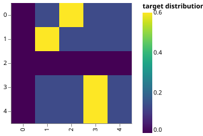
Label smoothing actually starts to penalize the model if it gets very confident about a given choice.
def loss(x, crit):
d = x + 3 * 1
predict = torch.FloatTensor([[0, x / d, 1 / d, 1 / d, 1 / d]])
return crit(predict.log(), torch.LongTensor([1])).data
def penalization_visualization():
crit = LabelSmoothing(5, 0, 0.1)
loss_data = pd.DataFrame(
{
"Loss": [loss(x, crit) for x in range(1, 100)],
"Steps": list(range(99)),
}
).astype("float")
return (
alt.Chart(loss_data)
.mark_line()
.properties(width=350)
.encode(
x="Steps",
y="Loss",
)
.interactive()
)
show_example(penalization_visualization)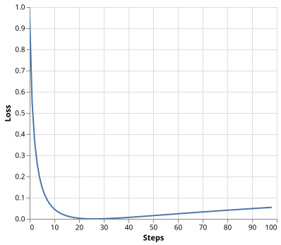
A First Example
We can begin by trying out a simple copy-task. Given a random set of input symbols from a small vocabulary, the goal is to generate back those same symbols.
Synthetic Data
def data_gen(V, batch_size, nbatches):
"Generate random data for a src-tgt copy task."
for i in range(nbatches):
data = torch.randint(1, V, size=(batch_size, 10))
data[:, 0] = 1
src = data.requires_grad_(False).clone().detach()
tgt = data.requires_grad_(False).clone().detach()
yield Batch(src, tgt, 0)Loss Computation
class SimpleLossCompute:
"A simple loss compute and train function."
def __init__(self, generator, criterion):
self.generator = generator
self.criterion = criterion
def __call__(self, x, y, norm):
x = self.generator(x)
sloss = (
self.criterion(
x.contiguous().view(-1, x.size(-1)), y.contiguous().view(-1)
)
/ norm
)
return sloss.data * norm, slossGreedy Decoding
This code predicts a translation using greedy decoding for simplicity.
def greedy_decode(model, src, src_mask, max_len, start_symbol):
memory = model.encode(src, src_mask)
ys = torch.zeros(1, 1).fill_(start_symbol).type_as(src.data)
for i in range(max_len - 1):
out = model.decode(
memory, src_mask, ys, subsequent_mask(ys.size(1)).type_as(src.data)
)
prob = model.generator(out[:, -1])
_, next_word = torch.max(prob, dim=1)
next_word = next_word.data[0]
ys = torch.cat(
[ys, torch.zeros(1, 1).type_as(src.data).fill_(next_word)], dim=1
)
return ys# Train the simple copy task.
def example_simple_model():
V = 11
criterion = LabelSmoothing(size=V, padding_idx=0, smoothing=0.0)
model = make_model(V, V, N=2)
optimizer = torch.optim.Adam(
model.parameters(), lr=0.5, betas=(0.9, 0.98), eps=1e-9
)
lr_scheduler = LambdaLR(
optimizer=optimizer,
lr_lambda=lambda step: rate(
step, model_size=model.src_embed[0].d_model, factor=1.0, warmup=400
),
)
batch_size = 80
for epoch in range(20):
model.train()
run_epoch(
data_gen(V, batch_size, 20),
model,
SimpleLossCompute(model.generator, criterion),
optimizer,
lr_scheduler,
mode="train",
)
model.eval()
run_epoch(
data_gen(V, batch_size, 5),
model,
SimpleLossCompute(model.generator, criterion),
DummyOptimizer(),
DummyScheduler(),
mode="eval",
)[0]
model.eval()
src = torch.LongTensor([[0, 1, 2, 3, 4, 5, 6, 7, 8, 9]])
max_len = src.shape[1]
src_mask = torch.ones(1, 1, max_len)
print(greedy_decode(model, src, src_mask, max_len=max_len, start_symbol=0))
# execute_example(example_simple_model)Part 3: A Real World Example
Now we consider a real-world example using the Multi30k German-English Translation task. This task is much smaller than the WMT task considered in the paper, but it illustrates the whole system. We also show how to use multi-gpu processing to make it really fast.
Data Loading
We will load the dataset using torchtext and spacy for tokenization.
# Load spacy tokenizer models, download them if they haven't been
# downloaded already
def load_tokenizers():
try:
spacy_de = spacy.load("de_core_news_sm")
except IOError:
os.system("python -m spacy download de_core_news_sm")
spacy_de = spacy.load("de_core_news_sm")
try:
spacy_en = spacy.load("en_core_web_sm")
except IOError:
os.system("python -m spacy download en_core_web_sm")
spacy_en = spacy.load("en_core_web_sm")
return spacy_de, spacy_endef tokenize(text, tokenizer):
return [tok.text for tok in tokenizer.tokenizer(text)]
def yield_tokens(data_iter, tokenizer, index):
for from_to_tuple in data_iter:
yield tokenizer(from_to_tuple[index])def build_vocabulary(spacy_de, spacy_en):
def tokenize_de(text):
return tokenize(text, spacy_de)
def tokenize_en(text):
return tokenize(text, spacy_en)
print("Building German Vocabulary ...")
train, val, test = datasets.Multi30k(language_pair=("de", "en"))
vocab_src = build_vocab_from_iterator(
yield_tokens(train + val + test, tokenize_de, index=0),
min_freq=2,
specials=["<s>", "</s>", "<blank>", "<unk>"],
)
print("Building English Vocabulary ...")
train, val, test = datasets.Multi30k(language_pair=("de", "en"))
vocab_tgt = build_vocab_from_iterator(
yield_tokens(train + val + test, tokenize_en, index=1),
min_freq=2,
specials=["<s>", "</s>", "<blank>", "<unk>"],
)
vocab_src.set_default_index(vocab_src["<unk>"])
vocab_tgt.set_default_index(vocab_tgt["<unk>"])
return vocab_src, vocab_tgt
def load_vocab(spacy_de, spacy_en):
if not exists("vocab.pt"):
vocab_src, vocab_tgt = build_vocabulary(spacy_de, spacy_en)
torch.save((vocab_src, vocab_tgt), "vocab.pt")
else:
vocab_src, vocab_tgt = torch.load("vocab.pt")
print("Finished.\nVocabulary sizes:")
print(len(vocab_src))
print(len(vocab_tgt))
return vocab_src, vocab_tgt
if is_interactive_notebook():
# global variables used later in the script
spacy_de, spacy_en = show_example(load_tokenizers)
vocab_src, vocab_tgt = show_example(load_vocab, args=[spacy_de, spacy_en])Finished.
Vocabulary sizes:
59981
36745Batching matters a ton for speed. We want to have very evenly divided batches, with absolutely minimal padding. To do this we have to hack a bit around the default torchtext batching. This code patches their default batching to make sure we search over enough sentences to find tight batches.
Iterators
def collate_batch(
batch,
src_pipeline,
tgt_pipeline,
src_vocab,
tgt_vocab,
device,
max_padding=128,
pad_id=2,
):
bs_id = torch.tensor([0], device=device) # <s> token id
eos_id = torch.tensor([1], device=device) # </s> token id
src_list, tgt_list = [], []
for (_src, _tgt) in batch:
processed_src = torch.cat(
[
bs_id,
torch.tensor(
src_vocab(src_pipeline(_src)),
dtype=torch.int64,
device=device,
),
eos_id,
],
0,
)
processed_tgt = torch.cat(
[
bs_id,
torch.tensor(
tgt_vocab(tgt_pipeline(_tgt)),
dtype=torch.int64,
device=device,
),
eos_id,
],
0,
)
src_list.append(
# warning - overwrites values for negative values of padding - len
pad(
processed_src,
(
0,
max_padding - len(processed_src),
),
value=pad_id,
)
)
tgt_list.append(
pad(
processed_tgt,
(0, max_padding - len(processed_tgt)),
value=pad_id,
)
)
src = torch.stack(src_list)
tgt = torch.stack(tgt_list)
return (src, tgt)def create_dataloaders(
device,
vocab_src,
vocab_tgt,
spacy_de,
spacy_en,
batch_size=12000,
max_padding=128,
is_distributed=True,
):
# def create_dataloaders(batch_size=12000):
def tokenize_de(text):
return tokenize(text, spacy_de)
def tokenize_en(text):
return tokenize(text, spacy_en)
def collate_fn(batch):
return collate_batch(
batch,
tokenize_de,
tokenize_en,
vocab_src,
vocab_tgt,
device,
max_padding=max_padding,
pad_id=vocab_src.get_stoi()["<blank>"],
)
train_iter, valid_iter, test_iter = datasets.Multi30k(
language_pair=("de", "en")
)
train_iter_map = to_map_style_dataset(
train_iter
) # DistributedSampler needs a dataset len()
train_sampler = (
DistributedSampler(train_iter_map) if is_distributed else None
)
valid_iter_map = to_map_style_dataset(valid_iter)
valid_sampler = (
DistributedSampler(valid_iter_map) if is_distributed else None
)
train_dataloader = DataLoader(
train_iter_map,
batch_size=batch_size,
shuffle=(train_sampler is None),
sampler=train_sampler,
collate_fn=collate_fn,
)
valid_dataloader = DataLoader(
valid_iter_map,
batch_size=batch_size,
shuffle=(valid_sampler is None),
sampler=valid_sampler,
collate_fn=collate_fn,
)
return train_dataloader, valid_dataloaderTraining the System
def train_worker(
gpu,
ngpus_per_node,
vocab_src,
vocab_tgt,
spacy_de,
spacy_en,
config,
is_distributed=False,
):
print(f"Train worker process using GPU: {gpu} for training", flush=True)
torch.cuda.set_device(gpu)
pad_idx = vocab_tgt["<blank>"]
d_model = 512
model = make_model(len(vocab_src), len(vocab_tgt), N=6)
model.cuda(gpu)
module = model
is_main_process = True
if is_distributed:
dist.init_process_group(
"nccl", init_method="env://", rank=gpu, world_size=ngpus_per_node
)
model = DDP(model, device_ids=[gpu])
module = model.module
is_main_process = gpu == 0
criterion = LabelSmoothing(
size=len(vocab_tgt), padding_idx=pad_idx, smoothing=0.1
)
criterion.cuda(gpu)
train_dataloader, valid_dataloader = create_dataloaders(
gpu,
vocab_src,
vocab_tgt,
spacy_de,
spacy_en,
batch_size=config["batch_size"] // ngpus_per_node,
max_padding=config["max_padding"],
is_distributed=is_distributed,
)
optimizer = torch.optim.Adam(
model.parameters(), lr=config["base_lr"], betas=(0.9, 0.98), eps=1e-9
)
lr_scheduler = LambdaLR(
optimizer=optimizer,
lr_lambda=lambda step: rate(
step, d_model, factor=1, warmup=config["warmup"]
),
)
train_state = TrainState()
for epoch in range(config["num_epochs"]):
if is_distributed:
train_dataloader.sampler.set_epoch(epoch)
valid_dataloader.sampler.set_epoch(epoch)
model.train()
print(f"[GPU{gpu}] Epoch {epoch} Training ====", flush=True)
_, train_state = run_epoch(
(Batch(b[0], b[1], pad_idx) for b in train_dataloader),
model,
SimpleLossCompute(module.generator, criterion),
optimizer,
lr_scheduler,
mode="train+log",
accum_iter=config["accum_iter"],
train_state=train_state,
)
GPUtil.showUtilization()
if is_main_process:
file_path = "%s%.2d.pt" % (config["file_prefix"], epoch)
torch.save(module.state_dict(), file_path)
torch.cuda.empty_cache()
print(f"[GPU{gpu}] Epoch {epoch} Validation ====", flush=True)
model.eval()
sloss = run_epoch(
(Batch(b[0], b[1], pad_idx) for b in valid_dataloader),
model,
SimpleLossCompute(module.generator, criterion),
DummyOptimizer(),
DummyScheduler(),
mode="eval",
)
print(sloss)
torch.cuda.empty_cache()
if is_main_process:
file_path = "%sfinal.pt" % config["file_prefix"]
torch.save(module.state_dict(), file_path)def train_distributed_model(vocab_src, vocab_tgt, spacy_de, spacy_en, config):
from the_annotated_transformer import train_worker
ngpus = torch.cuda.device_count()
os.environ["MASTER_ADDR"] = "localhost"
os.environ["MASTER_PORT"] = "12356"
print(f"Number of GPUs detected: {ngpus}")
print("Spawning training processes ...")
mp.spawn(
train_worker,
nprocs=ngpus,
args=(ngpus, vocab_src, vocab_tgt, spacy_de, spacy_en, config, True),
)
def train_model(vocab_src, vocab_tgt, spacy_de, spacy_en, config):
if config["distributed"]:
train_distributed_model(
vocab_src, vocab_tgt, spacy_de, spacy_en, config
)
else:
train_worker(
0, 1, vocab_src, vocab_tgt, spacy_de, spacy_en, config, False
)
def load_trained_model():
config = {
"batch_size": 32,
"distributed": False,
"num_epochs": 8,
"accum_iter": 10,
"base_lr": 1.0,
"max_padding": 72,
"warmup": 3000,
"file_prefix": "multi30k_model_",
}
model_path = "multi30k_model_final.pt"
if not exists(model_path):
train_model(vocab_src, vocab_tgt, spacy_de, spacy_en, config)
model = make_model(len(vocab_src), len(vocab_tgt), N=6)
model.load_state_dict(torch.load("multi30k_model_final.pt"))
return model
if is_interactive_notebook():
model = load_trained_model()Once trained we can decode the model to produce a set of translations. Here we simply translate the first sentence in the validation set. This dataset is pretty small so the translations with greedy search are reasonably accurate.
Results
# Load data and model for output checks
def check_outputs(
valid_dataloader,
model,
vocab_src,
vocab_tgt,
n_examples=15,
pad_idx=2,
eos_string="</s>",
):
results = [()] * n_examples
for idx in range(n_examples):
print("\nExample %d ========\n" % idx)
b = next(iter(valid_dataloader))
rb = Batch(b[0], b[1], pad_idx)
greedy_decode(model, rb.src, rb.src_mask, 64, 0)[0]
src_tokens = [
vocab_src.get_itos()[x] for x in rb.src[0] if x != pad_idx
]
tgt_tokens = [
vocab_tgt.get_itos()[x] for x in rb.tgt[0] if x != pad_idx
]
print(
"Source Text (Input) : "
+ " ".join(src_tokens).replace("\n", "")
)
print(
"Target Text (Ground Truth) : "
+ " ".join(tgt_tokens).replace("\n", "")
)
model_out = greedy_decode(model, rb.src, rb.src_mask, 72, 0)[0]
model_txt = (
" ".join(
[vocab_tgt.get_itos()[x] for x in model_out if x != pad_idx]
).split(eos_string, 1)[0]
+ eos_string
)
print("Model Output : " + model_txt.replace("\n", ""))
results[idx] = (rb, src_tokens, tgt_tokens, model_out, model_txt)
return results
def run_model_example(n_examples=5):
global vocab_src, vocab_tgt, spacy_de, spacy_en
print("Preparing Data ...")
_, valid_dataloader = create_dataloaders(
torch.device("cpu"),
vocab_src,
vocab_tgt,
spacy_de,
spacy_en,
batch_size=1,
is_distributed=False,
)
print("Loading Trained Model ...")
model = make_model(len(vocab_src), len(vocab_tgt), N=6)
model.load_state_dict(
torch.load("multi30k_model_final.pt", map_location=torch.device("cpu"))
)
print("Checking Model Outputs:")
example_data = check_outputs(
valid_dataloader, model, vocab_src, vocab_tgt, n_examples=n_examples
)
return model, example_data
# execute_example(run_model_example)
Attention Visualization
Even with a greedy decoder the translation looks pretty good. We can further visualize it to see what is happening at each layer of the attention.
def mtx2df(m, max_row, max_col, row_tokens, col_tokens):
"convert a dense matrix to a data frame with row and column indices"
return pd.DataFrame(
[
(
r,
c,
float(m[r, c]),
"%.3d %s"
% (r, row_tokens[r] if len(row_tokens) > r else "<blank>"),
"%.3d %s"
% (c, col_tokens[c] if len(col_tokens) > c else "<blank>"),
)
for r in range(m.shape[0])
for c in range(m.shape[1])
if r < max_row and c < max_col
],
# if float(m[r,c]) != 0 and r < max_row and c < max_col],
columns=["row", "column", "value", "row_token", "col_token"],
)
def attn_map(attn, layer, head, row_tokens, col_tokens, max_dim=30):
df = mtx2df(
attn[0, head].data,
max_dim,
max_dim,
row_tokens,
col_tokens,
)
return (
alt.Chart(data=df)
.mark_rect()
.encode(
x=alt.X("col_token", axis=alt.Axis(title="")),
y=alt.Y("row_token", axis=alt.Axis(title="")),
color="value",
tooltip=["row", "column", "value", "row_token", "col_token"],
)
.properties(height=400, width=400)
.interactive()
)def get_encoder(model, layer):
return model.encoder.layers[layer].self_attn.attn
def get_decoder_self(model, layer):
return model.decoder.layers[layer].self_attn.attn
def get_decoder_src(model, layer):
return model.decoder.layers[layer].src_attn.attn
def visualize_layer(model, layer, getter_fn, ntokens, row_tokens, col_tokens):
# ntokens = last_example[0].ntokens
attn = getter_fn(model, layer)
n_heads = attn.shape[1]
charts = [
attn_map(
attn,
0,
h,
row_tokens=row_tokens,
col_tokens=col_tokens,
max_dim=ntokens,
)
for h in range(n_heads)
]
assert n_heads == 8
return alt.vconcat(
charts[0]
# | charts[1]
| charts[2]
# | charts[3]
| charts[4]
# | charts[5]
| charts[6]
# | charts[7]
# layer + 1 due to 0-indexing
).properties(title="Layer %d" % (layer + 1))Encoder Self Attention
def viz_encoder_self():
model, example_data = run_model_example(n_examples=1)
example = example_data[
len(example_data) - 1
] # batch object for the final example
layer_viz = [
visualize_layer(
model, layer, get_encoder, len(example[1]), example[1], example[1]
)
for layer in range(6)
]
return alt.hconcat(
layer_viz[0]
# & layer_viz[1]
& layer_viz[2]
# & layer_viz[3]
& layer_viz[4]
# & layer_viz[5]
)
show_example(viz_encoder_self)Preparing Data ...
Loading Trained Model ...
Checking Model Outputs:
Example 0 ========
Source Text (Input) : <s> Mehrere Kinder heben die Hände , während sie auf einem bunten Teppich in einem Klassenzimmer sitzen . </s>
Target Text (Ground Truth) : <s> Several children are raising their hands while sitting on a colorful rug in a classroom . </s>
Model Output : <s> A group of children are in their hands while sitting on a colorful carpet . </s>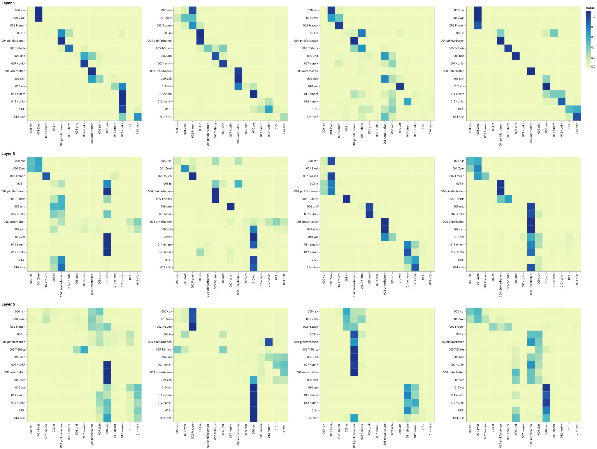
Decoder Self Attention
def viz_decoder_self():
model, example_data = run_model_example(n_examples=1)
example = example_data[len(example_data) - 1]
layer_viz = [
visualize_layer(
model,
layer,
get_decoder_self,
len(example[1]),
example[1],
example[1],
)
for layer in range(6)
]
return alt.hconcat(
layer_viz[0]
& layer_viz[1]
& layer_viz[2]
& layer_viz[3]
& layer_viz[4]
& layer_viz[5]
)
show_example(viz_decoder_self)Preparing Data ...
Loading Trained Model ...
Checking Model Outputs:
Example 0 ========
Source Text (Input) : <s> Drei Menschen wandern auf einem stark verschneiten Weg . </s>
Target Text (Ground Truth) : <s> A <unk> of people are hiking throughout a heavily snowed path . </s>
Model Output : <s> Three people hiking on a busy <unk> . </s>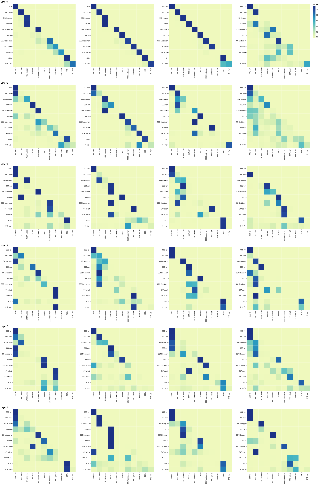
Decoder Src Attention
def viz_decoder_src():
model, example_data = run_model_example(n_examples=1)
example = example_data[len(example_data) - 1]
layer_viz = [
visualize_layer(
model,
layer,
get_decoder_src,
max(len(example[1]), len(example[2])),
example[1],
example[2],
)
for layer in range(6)
]
return alt.hconcat(
layer_viz[0]
& layer_viz[1]
& layer_viz[2]
& layer_viz[3]
& layer_viz[4]
& layer_viz[5]
)
show_example(viz_decoder_src)Preparing Data ...
Loading Trained Model ...
Checking Model Outputs:
Example 0 ========
Source Text (Input) : <s> Baby sieht sich die Blätter am Zweig eines Baumes an . </s>
Target Text (Ground Truth) : <s> Baby looking at the leaves on a branch of a tree . </s>
Model Output : <s> A baby is looking at the leaves at a tree . </s>
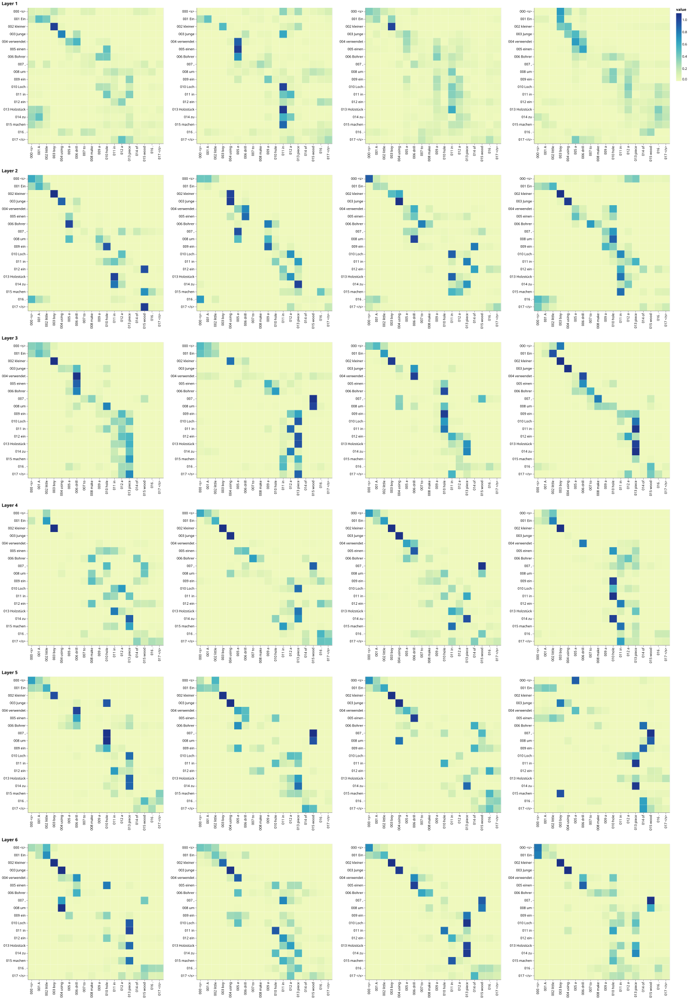